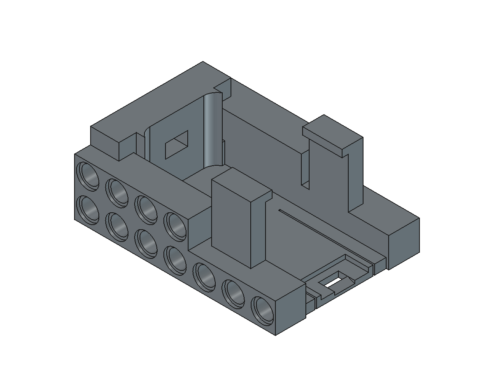
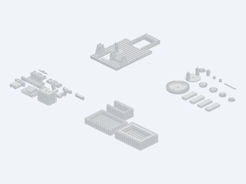
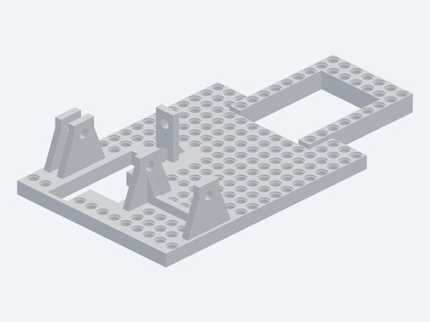
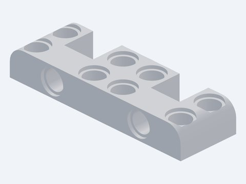
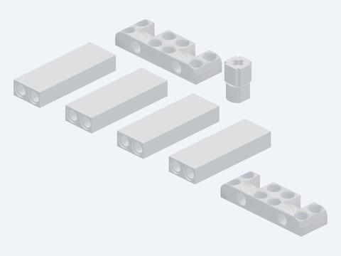

差速轉向車模型（電動差速器＋MG90S 轉向）
Differential Drive Car with Servo Steering
把「電動差速器」放到後軸、「MG90S 前輪轉向」放到前軸，組成一台 LEGO Technic 相容的四輪車。2026-11-25 以「簡單、好組裝」重新設計：只印一片底盤，TT 馬達裝在 9L 外框裡平躺在底盤正中，馬達軸用聯軸器和 3L 十字軸直接接差速器的小齒輪；差速器跟著馬達軸往左移 16 mm，底盤高度讓馬達軸剛好和後輪軸同高。上層是麵包板座和雙 18650 電池座背對背用銷接成一組，架在四根一樣的立柱上。2026-11-26 加上兩個 MG90S 側邊固定件，用 LEGO 銷把伺服座側面直接固定在底盤側臂上。附 3D 動畫頁示範組裝順序與轉彎時差速器怎麼動。
car_assembly_preview
重點規格
- 軸距／輪距
- 160 mm／前 134、後 130 mm
- 輪子
- 前 Ø56 × 26 氣球胎、後 Ø81.6 × 15 機車輪，都是 LEGO 標準輪
- 整車
- 165 × 229 × 106 mm（直行），最低點離地 7.5 mm
- 底盤
- 一片 Technic 孔板，離地 13.3 mm
- 馬達
- TT 減速馬達裝在 SideTop 9L 外框，置中平躺；聯軸器＋3L 軸直接接小齒輪
- 最小轉彎半徑
- 約 291 mm（後軸中點）
組成零件（7 件作品）
以下零件直接沿用各自的作品；點進去可看設計說明、下載列印檔與原始碼。

後軸驅動
電動差速器教學模型
冠狀齒輪、小齒輪、行星架、十字銷、行星／半軸齒輪與軸承塔設計，整組轉 180° 放到後軸

差速器原型
開放式差速器教學模型
行星架、行星齒輪、半軸齒輪的原始設計，電動版沿用

前輪轉向
MG90S 伺服機前輪轉向機構（阿克曼）
整組轉向模組（伺服座、轉向車架、左右轉向節、拉桿、曲柄）一個零件都沒改，用車架平板的銷插在底盤上，另加兩個側邊固定件把伺服座接到底盤側臂

馬達外框
TT 馬達 Technic 外框（Side／SideTop／Top）
SideTop 9L 版裝 TT 馬達，側躺置中、直接用 2L 銷插在底盤上；馬達軸接聯軸器和 3L 軸

聯軸器
TT 馬達 Technic 座與聯軸器
TT 軸轉 LEGO 十字孔的聯軸器，接 3L 十字軸到小齒輪

電池
雙 18650 電池盒 Technic 底座
雙 18650 電池座翻過來，和麵包板座背對背用銷接成上層

電路
麵包板 Technic 底座
麵包板座朝上，底面和電池座背對背，整組架在四根立柱上
2026-11-26 新增：MG90S 側邊固定件
- 原本伺服座只靠前面的轉向車架隔板吊著，底盤兩側的側臂只是貼著它；現在兩側各加一個側邊固定件，用 LEGO 銷把伺服座側面直接接到側臂上
- 兩側用同一個零件（6 × 1 × 2，47.4 × 7.4 × 15.4 mm，印 2 個，方向相反）：坐在側臂上（間隙 0.4）、貼著伺服座側面（間隙 0.6），和轉向車架平板同高
- 接伺服座：水平穿孔 8 個（伺服座上兩排）。右側：2L 銷插進底座背面的孔（前後兩端、上下兩排，共 4 支）；左側：側蓋上方那 3 支 2L 銷換成 3L 銷，銷頭從側蓋外面露出來
- 接底盤：頂部兩個缺口裡各一個直孔，對準側臂的孔；3L 銷長端朝下穿過固定件下層、插進側臂，短端剛好填滿缺口、和頂面齊平
- 組裝順序：在車外組轉向模組時，伺服座裝好就先套上固定件（要在轉向節和拉桿之前，否則推不進去），整組放到底盤上後再從缺口插 3L 銷
- 零件數 50 → 52、要印的 28 → 30 件；多用 2L 摩擦銷 4 支、3L 摩擦銷 7 支
2026-11-25 重新設計：簡單、好組裝
- 一片底盤：差速器底板和轉向的中段底盤不再分開，前後一體印出；後段長出差速器的軸承塔、小齒輪塔、外側輪軸塔，前段兩支側臂和前鼻撐轉向車架
- 馬達直接接小齒輪：拿掉十字滑塊聯軸器，回到最初的做法：TT 軸 → 聯軸器（TT 軸轉 LEGO 十字孔）→ LEGO 3L 十字軸 → 11 齒小齒輪，四件在同一條線上
- 9L 馬達外框：外框側躺、置中（x −35.7～35.7），馬達軸在外框的孔格上，離外框中心 16 mm，所以馬達軸在中線左邊 16 mm（兩格）
- 差速器跟著馬達軸走：差速器整組往左移 16 mm；上下則由底盤高度配合：外框下側面就是底板頂面（離地 21.1 mm），馬達軸在它上面 19.7 mm，正好是後輪軸高 40.8 mm
- 後輪不動、左右對稱：左軸改 LEGO 8L、右軸改 12L（各差兩格）；左內塔離外塔只剩 5 mm，兩塔之間用一塊矮牆連起來
- 零件數從 53 減到 50，要印的從 31 件減到 28 件；不再有墩柱、中段底盤和三件式聯軸器
整車配置
- 車輛座標沿用轉向機構：前軸 y = 40、後軸 y = −120，軸距維持轉向設計時假設的 160 mm，阿克曼幾何不受影響
- 差速器轉 180° 放到後軸（中心 x = −16）；冠狀齒輪 44 齒 : 小齒輪 11 齒 = 4:1
- 冠狀齒輪的齒頂在後軸下方 33.3 mm，所以後輪用大的 LEGO 機車輪（輪胎 2902 Ø81.6 × 15＋白色 6 輻輪框 2903，軸心離地 40.8）；底板開口讓冠狀齒輪和行星架穿過去轉，冠狀齒輪離地 7.5 mm
- 前輪維持 Ø56 LEGO 輪（氣球胎 55976＋淺灰輪框 56145），轉向模組（伺服座、車架、轉向節、拉桿、曲柄）一個零件都沒改
組裝順序
- ① 底盤 → ② TT 馬達裝進 9L 外框、套上聯軸器，外框用 6 支 2L 銷往下插進底板（外框下側 27 個孔都對得上）
- ③ 3L 十字軸從後方穿過小齒輪塔插進聯軸器，11 齒小齒輪再從後方套上（小齒輪的十字孔是盲孔）
- ④ 差速器組成一顆，放進兩座內塔之間、邊放邊轉讓冠狀齒輪咬進小齒輪 → ⑤ 半軸套放好，8L／12L 十字軸從外側穿進去，套軸套、後輪、外側半軸套
- ⑥ 轉向模組在車前方另外組好：伺服座裝好就先套上兩個側邊固定件，再裝車架、轉向節、拉桿和曲柄
- ⑦ 整組往下放，伺服座穿過底盤前段的方框，車架平板用 2L 銷插進側臂和前鼻，側邊固定件用 3L 銷從頂部缺口插進側臂
- ⑧ 四根立柱往下插 → ⑨ 麵包板座＋電池座（先背對背接好）放到立柱上
新設計的零件
- 底盤：Technic 孔板（103.4 × 195.4 mm，厚 7.8），帶差速器內塔（跟著往左 16 mm）、外側輪軸塔、小齒輪塔，前段側臂和前鼻高到 23.8 mm 接轉向車架；170 個 Technic 孔
- 四根立柱：完全一樣，都站在底板上（x = ±48，y = −20、−76），頂端在電池座下 0.6 mm
- MG90S 側邊固定件 ×2：同一個零件，水平孔接伺服座側面、缺口裡的直孔接側臂（見上方 2026-11-26）
- 後輪軸全用 LEGO 標準件、不用印：機車輪（輪胎＋輪框）、8L／12L 十字軸穿過內外兩座軸承塔、半軸套貼外塔內側、軸套夾在外塔與輪子之間，輪轂外側再套一個半軸套
- 沿用的列印件：9L 馬達外框、聯軸器、差速器全部齒輪與行星架、轉向模組、麵包板座、雙 18650 電池座
上層：麵包板座＋雙 18650 電池座（背對背）
- 麵包板座（13 × 9 × 2）朝上；雙 18650 電池座（13 × 9 × 3）翻過來在它下面，兩件底面相距 0.2 mm、用 2L 銷背對背接（8 支，85 個孔位可選）
- 這組中心在 y −48，避開冠狀齒輪（齒頂離地 74.1、在 y −86.7 之後）
- 電池盒開口朝下，突出電池座 2.2 mm、電池再突出約 2.5 mm，要讓過馬達外框（頂 60.5）：電池座下緣離地 66.4 mm、麵包板座頂面 106 mm
- 四根立柱頂端插進電池座外圈的孔（每根 2 支）；兩顆串聯成 7.4 V（2S）
檢查（build123d）
- 52 個零件兩兩檢查：沒有重疊；轉向打到左右極限時，最小間隙是拉桿與伺服座 0.4 mm、拉桿與側邊固定件 0.6 mm，前輪與底盤 8.4 mm
- 差速器轉一圈的各角度：冠狀齒輪與小齒輪沒有重疊，冠狀齒輪和行星架離底盤開口至少 1.0 mm；小齒輪、3L 軸、聯軸器跟著轉 4 倍，不碰底盤和馬達外框
- 插銷孔逐一探測：轉向車架→側臂與前鼻、馬達外框→底板（27 孔）、立柱→底板／電池座、電池座↔麵包板座、側邊固定件→伺服座與側臂，共 85 個孔全部對準
- 組裝順序：馬達往下、3L 軸與小齒輪從後方、差速器往下、後軸從外側、（車外）側邊固定件套上伺服座、轉向模組連固定件往下、立柱、上層，每一步沿裝入方向退出都不會撞到已裝好的零件
- 側邊固定件若等轉向模組上車後才裝，往伺服座推的 8 mm 會撞到轉向節和拉桿，所以排在車外先裝
- FreeCAD 組立圖由組裝 STEP 匯入，52 個零件依位置還原名稱與顏色
- 列印檔網格逐邊檢查：0 條開放邊
一次列印全部：car_all_plates.3mf
- 整台車要印的 30 件放在同一個 Bambu Studio 專案，分成 4 盤，每件都已轉好列印方向（大平面貼床）
- ① 底盤：一整片（約 6.1 小時、74 g） ② 傳動：冠狀齒輪、小齒輪、行星架、十字銷、行星齒輪 ×2、半軸齒輪 ×2、差速器軸套 ×2、立柱 ×4、聯軸器（約 2.8 小時、43 g）
- ③ 轉向：車架、轉向節、拉桿 ×2、曲柄、雙臂舵臂、伺服座底座與側蓋、側邊固定件 ×2（約 4.9 小時、55 g）
- ④ 馬達與電路：9L 馬達外框、麵包板座、雙 18650 電池座（約 11.6 小時、130 g）；合計約 25.4 小時、303 g（Bambu Lab X2D、PLA、0.4 噴嘴估算）
- LEGO 標準件一律不印：Technic 銷、十字軸（3L、8L、12L、附擋頭軸 ×2）、半軸套 ×4、軸套 ×2、前輪 Ø56 × 26 ×2、後輪 Ø81.6 × 15 機車輪 ×2；數量見動畫頁的標準件總表
- 十字孔（半軸齒輪、小齒輪、聯軸器）每邊間隙 0.15 mm：原本 0.075～0.1 mm 時十字軸插不進
- 用 Bambu Studio 命令列逐盤切片確認 4 盤都能切；網格都是 0 條開放邊；零件間留 15 mm，給 5 mm 自動 brim
3D 動畫頁
- 組裝步驟：13 步，依上面的組裝順序；轉向模組（含側邊固定件）在車前方另外組，再整組移到車頭往下放
- 銷、十字軸、LEGO 輪子等標準件不畫出來，每一步列出規格與數量；爆炸圖頁有標準件總表（2L 摩擦銷約 57 支、3L 摩擦銷 7 支等）
- 行駛示範：前輪轉角由轉向四連桿即時計算，再由轉彎中心推算四輪轉速；左打到底時內側後輪 78 %、外側 122 %
- 差速器跟著動：行星架轉速是兩後輪的平均，行星齒輪依轉速差自轉，小齒輪、3L 軸、聯軸器轉 4 倍；「轉彎中心」畫出前後輪軸線的交點
待實測
- 9L 外框是試印版（tt-motor-technic-frame 的兩個試印方案之一），實印後確認馬達裝得進去、卡得住
- 輪子型號依 YouTube 影片中的實車判讀；2903 輪轂寬度以 13.8 mm、十字孔穿透估算，十字軸伸出輪轂外約 10 mm，實物裝上後確認半軸套位置
- 轉向沒有機械擋塊，伺服機要在程式裡限制在 ±17.5°
- 電池盒開口朝下，只靠緊配卡在電池座裡；換電池要把上層整組拆下
檔案下載
| 預覽 | 類型 | 說明／下載 | 大小 |
|---|---|---|---|
 | 3MF | 全部列印零件：一個 Bambu Studio 專案，分 4 盤（底盤、傳動、轉向、馬達與電路），共 30 件，LEGO 標準件不含 car_all_plates.3mf | 11.3 MB |
 | FCStd | FreeCAD 組立圖（52 個零件） car_assembly.FCStd | 2.4 MB |
 | 3MF | 底盤（一盤，平放列印） car_chassis.3mf | 13.7 MB |
 | 3MF | MG90S 側邊固定件（印 2 個，內面朝下平放） car_servo_bracket.3mf | 874 KB |
 | 3MF | 四根立柱、聯軸器與兩個側邊固定件（一盤） car_parts.3mf | 268 KB |
| PY | 新零件幾何與擺放（build123d） car_parts.py | 21 KB | |
| PY | 整車組裝模型、爆炸圖（build123d） car_assembly.py | 8 KB | |
| PY | 列印盤排版（build123d） print_parts.py | 3 KB | |
| PY | 側邊固定件近照模型（build123d） servo_bracket_detail.py | 1 KB | |
| PY | 全部零件分盤成一個 Bambu 專案的腳本 print_all.py | 14 KB | |
| PY | 干涉、轉向掃掠、差速器、插銷孔、組裝順序檢查 check_car.py | 12 KB | |
| PY | 冠狀齒輪嚙合與行星架旋轉檢查 check_mesh.py | 1 KB | |
| PY | 產生 FreeCAD 組立圖的腳本 build_assembly.py | 3 KB |
FCStd 用 FreeCAD 1.1 開啟（參數在 Params 試算表）；3MF 可直接拖進 Bambu Studio 或其他切片軟體。